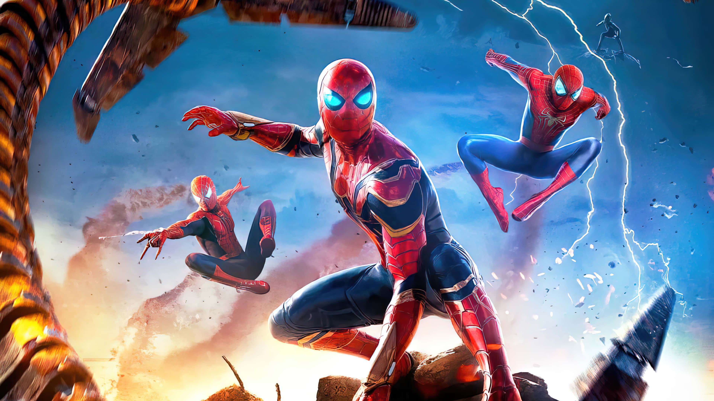

WORLD IN FOCUS
Spider-Man. Every mask. Every story.
YOUR FRIENDLY NEIGHBORHOOD UNIVERSESPIDER-MAN / WEBVERSE

EVERY MASK. EVERY STORY.
Find your next film. Put your web skills to the test.
ONE MASK. A MULTIVERSE OF STORIES.
Step into the Spider-Verse.
Choose a world, then open its portal to run, jump, and web-swing across the rooftops. Use the buttons or drag the scene to rotate the 3D explorer. Keyboard and touch controls are inside.
THE WATCH GUIDE
Your next movie,
sorted.
Every theatrical Spider-Man feature since 2002. Choose your Peter Parker—or follow Miles. Your next great watch starts here.
THE SPIDER-MAN COLLECTION
No films found.
Try another title or reset the filters.
ON THE HORIZON
Coming next.
Films are shown in release order. The Spider-Man films span separate continuities; the series label tells you which story you’re following. Brand New Day is included as released. Upcoming films cannot be marked watched. Film status checked November 10, 2026.
Which Spider-Man should I start with?
Tobey Maguire: Spider-Man → Spider-Man 2 → Spider-Man 3.
Andrew Garfield: The Amazing Spider-Man → The Amazing Spider-Man 2.
Tom Holland: Homecoming → Far From Home → No Way Home → Brand New Day.
Miles Morales: Into the Spider-Verse → Across the Spider-Verse, with Beyond the Spider-Verse announced next.
Each series has its own continuity. For extra context before No Way Home, watch Tobey’s and Andrew’s films first.
SUIT UP. THE CITY IS YOUR PLAYGROUND.
Welcome to the Web Lab.
Choose a web. Track a moving drone. Click, tap, or focus a drone and press Enter to shoot.
CHOOSE YOUR OPPONENT
QUEENS / NIGHT PATROL
FREE PLAY
HIT STREAK0
TRAINING COMPLETE
Nice shooting, Spidey.
Classic line: aim precisely at a drone for 100 points.
Track moving targets. Catch the gold drone for double points. Build a hit streak. Switch webs with keys 1, 2, and 3. Free play has no timer. The challenge runs only while this tab is open. Your best challenge score is saved on this browser: 0.